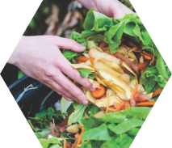
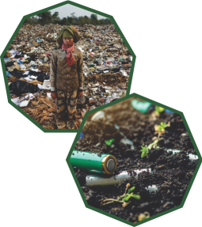
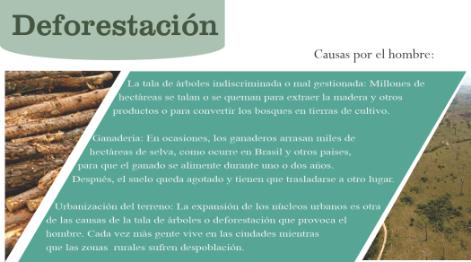
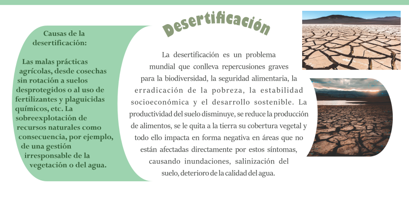
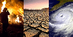
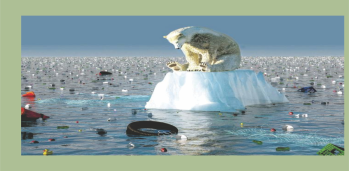

En esta edición de Stercus pretendemos que logres aprender acerca de la importancia del compostaje, también vamos a hablar de la contaminación del suelo, la deforestación, la desertificación, y uno de los más grandes problemas ecológicos actuales que es el cambio climático pero enfocándonos en nuestro tema principal que es la composta, también queremos dar soluciones con los beneficios de esta, y como podemos lograr un cambio importante en nuestro ambiente con un pequeño cambio, el cual nosotros aspiramos a que no sea en verdad pequeño si no que podamos lograr un cambio impactante en el entorno que nos rodea, y que podamos aprovechar los residuos que generamos diariamente para poderlos ocupar en el compostaje, que por cierto, si aún no tienes idea de cómo hacerlo o por donde iniciar, estás en el lugar correcto pues aquí te vamos a explicar desde cero el proceso, los materiales, y todo lo que necesites saber para que puedas iniciar a ser parte de este cambio. Con esta revista queremos generar conciencia, pues, muchas veces no nos damos cuenta de todo el daño que hemos causado al ambiente y no medimos lo grave que es esto para nosotros y nuestro futuro, así que, esperamos que después de leer nuestra revista haya impacto dentro de cada lector y se empiece a producir un cambio.
Los residuos orgánicos son nutrientes no aprovechados que la naturaleza recupera de forma natural. Corresponden a una importante fracción de los residuos industriales y a más de la mitad de los residuos domiciliarios y asimilables a domiciliarios. Muchos de ellos se pueden evitar y la fracción generada como residuo puede ser valorizada. Los residuos orgánicos son causantes de diversos impactos ambientales asociados a una inadecuada disposición final, tales como la generación de lixiviados, olores, gases de efecto invernadero (principalmente metano), y la proliferación de vectores. Además, el manejo actual que se da a los residuos orgánicos en el país implica un desaprovechamiento de importantes oportunidades de generación de valor, puesto que se podrían utilizar para generar energía y nutrientes para los suelos del país. En el país se generan 120 mil 128 toneladas de basura al día, 46.42 por ciento son desechos orgánicos.
Aparece cuando la concentración de contaminantes en la superficie es tan alta que daña la biodiversidad del suelo y pone en riesgo nuestra salud. Precisamente actividades como la ganadería y la agricultura intensivas suelen emplear fármacos, plaguicidas y fertilizantes que contaminan los campos, al igual que ocurre con los metales pesados y otras sustancias químicas de origen natural o antropogénico. La erosión, la pérdida de carbono orgánico, la salinización, la compactación, la acidificación y la contaminación química son los principales responsables del deterioro actual del suelo.
La contaminación del suelo daña a los microorganismos del suelo y a organismos mayores que viven en él y, por tanto, afecta a la biodiversidad del suelo, reduciendo la materia orgánica que contiene y su capacidad para actuar como filtro. Las plantas y vegetales también se ven afectadas por esta contaminación y, por tanto, los animales que las ingieren.
Normalmente se diferencia entre la contaminación local o puntual (edáfica) que proviene de fuentes determinadas (actividades industriales, vertederos
explotaciones mineras…), y la contaminación difusa (explotaciones agrícolas, lodos, depuradoras, pesticidas…)
La contaminación puntual de suelos se localiza en zonas que rodean a la fuente contaminante debido a la relación directa. Se trata de un problema que se ha agudizado en los últimos años debido a la proliferación de vertederos ilegales, a la intensificación de la actividad industrial concentrada en determinadas áreas geográficas, la alta densidad urbana, incluso en los alrededores de antiguas instalaciones militares. Este tipo de contaminación de suelos también es frecuente en antiguos vertederos abandonados, pero también es frecuente debido a la eliminación de residuos municipales, residuos industriales o fugas en actividades industriales.
Algunas soluciones para disminuir la contaminación del suelo:
Consumir alimentos sostenibles, reciclar correctamente pilas y baterías, hacer compostaje casero o deshacernos de los fármacos en los lugares habilitados para ello.
Incentivar un modelo más
ecológico de industria, agricultura y ganadería, entre otras actividades económicas.
Mejorar la planificación urbanística de las ciudades y del transporte, así como el tratamiento de las aguas residuales.
Reformar la gestión de los residuos mineros, restaurar la topografía y conservar la capa superficial del suelo.
La solución tanto a la contaminación puntual como a la difusa pasa por la aplicación de técnicas de descontaminación de suelos mediante tratamientos físico-químicos o lavado, o técnicas de recuperación de suelos contaminados, degradados o empobrecidos, como las técnicas de contención
La composta es un abono orgánico que se forma por la degradación microbiana de materiales acomodados en capas y sometidos a un proceso de descomposición. Estos desechos funcionan como abono ecológico que sirve para nutrir a nuestras plantas o huertos. La composta contribuye a mejorar el ambiente al retirar esos residuos del circuito de la contaminación de suelos, aguas y atmósfera y enriquecer los cultivos, de acuerdo con la Secretaría de Medio Ambiente y Recursos Naturales.
Tipos de compostas
1. Tradicional En esta se mezclan todo tipo de desechos orgánicos y se les “voltea” cada cierto tiempo con una pala o alguna otra máquina; dependiendo de la cantidad que se esté produciendo.
2. Humus. A una composta estándar se le agregan lombrices de tierra. Mientras se vayan comiendo la tierra donde están, crean humus en dos formas: sólido y líquido.
3. De estiércol. Este, será revuelto con agua, alcanzando así altas temperaturas. Esta composta tiene mucho nitrógeno y, a pesar de que atrae bastantes moscas, es particularmente efectiva.
4. Avicomposta. Básicamente, las gallinas auxilian a generar este tipo de composta, la cual tiene ciertas complejidades pero que da como resultado un compost considerablemente bueno.
5. Composta de café.En este caso, se recogen los restos de la producción del café, especialmente la cascarilla. Contiene muchos nutrientes debido a sus altas cantidades de nitrógeno, además de que no acidifica la tierra en el proceso. 6. Turba. Este es uno de los tipos de composta que mezclan varios materiales, principalmente vegetales. No obstante, también se le puede añadir a la mezcla algo de sedimentos del café o musgo.
En la composta puedes tirar: restos de frutas y verduras, yerba, saquitos de té, los residuos de café y cáscaras de huevo. También es importante que agregues una base de residuos secos, como trozos de cartón, servilletas o pasto y hojas secas para que no haya exceso de humedad en la composta
Por otro lado, también es fundamental saber qué alimentos no se pueden compostar y cuales sí. Se recomienda evitar añadir a la composta productos de origen animal como carne y pescado, alimentos que incluyan grasas, aceites de cocina, químicos, comida cocinada, cadáveres de animales y detritos de perros y gatos...

El Diccionario de la lengua española (DLE) define la deforestación como “despojar un terreno de plantas forestales”. De esta manera, se trata de un fenómeno, provocado por el impacto de actividades humanas o por causas naturales, que tiene como consecuencia la pérdida de bosques y selvas. Según el Informe Frentes de Deforestación 2021 del Fondo Mundial para la Naturaleza (WWF), en los últimos 13 años, más de 43 millones de hectáreas de bosque han sido devastadas, un terreno que equivale al tamaño del estado de California en Estados Unidos. Sin duda, estos datos reflejan la acuciante necesidad de poner el foco en la protección de las zonas con más riesgo de sufrir estos efectos tan devastadores. En este sentido, Brasil, la República Democrática del Congo e Indonesia fueron tres de los países que más sufrieron las consecuencias de la deforestación en 2020, los cuales llegaron a registrar la mayor pérdida de bosques primarios en sus territorios, según recogió el último informe de Global Forest Watch.
Actualmente, el ritmo de deforestación es demasiado alto. Los bosques son ecosistemas que se recuperan muy lentamente. Algunas variedades de especies de flora e, indirectamente, la fauna que vive allí, están en peligro si el bosque desaparece.
 Consecuencias:
 Consecuencias:
Pérdida de biodiversidad: Las selvas y los bosques son algunos de los ecosistemas más fecundos del planeta, albergan miles o millones de formas de vida de todo tipo (un alto porcentaje de las cuales ni siquiera ha sido descubierto por la humanidad). Todo ello se pone en riesgo si destruimos su hábitat.
Aumento del carbono en la atmósfera y calentamiento global: Los bosques cumplen con una función termorreguladora del planeta ya que absorben grandes cantidades de dióxido de carbono (CO2) que utilizan para realizar la fotosíntesis, proceso que permite la fijación del carbono y la liberación de oxígeno (O2) a la atmósfera. Al deforestar, se incrementan los niveles de dióxido de carbono, que se acumula en la atmósfera. Esta alteración en el ciclo de este gas trae como consecuencia un aumento en la temperatura mundial, pues el CO2 es el principal gas de efecto invernadero.
Destrucción de los suelos: La radiación solar, el viento y la lluvia (todos factores erosivos) son atenuados en una importante medida por la presencia de los bosques, que actúan como defensa del suelo. Sin ellos, los elementos inciden directamente en el suelo, ocasionando cambios de relieve y erosiones.
Empobrecimiento del aire: Los bosques, además, liberan importantes cantidades de vapor de agua a la atmósfera, lo cual contribuye a mantener los suelos húmedos y aporta al ciclo hidrológico. La disminución de este aporte produce aires más secos.
Desertificación: Es uno de los fenómenos más terribles asociados a la deforestación a gran escala es la desertificación, o sea, la aparición de nuevos desiertos o expansión de los desiertos existentes.
El cambio climático se refiere a los cambios a largo plazo de las temperaturas y los patrones climáticos. Estos cambios pueden ser naturales, debido a variaciones en la actividad solar o erupciones volcánicas grandes. Pero desde el siglo XIX, las actividades humanas han sido el principal motor del cambio climático, debido principalmente a la quema de combustibles fósiles como el carbón, el petróleo y el gas.
La quema de combustibles fósiles genera emisiones de gases de efecto invernadero que actúan como una manta que envuelve a la Tierra, atrapando el calor del sol y elevando las temperaturas.
El cambio climático se ha convertido en uno de los problemas más apremiantes que enfrenta la humanidad en la actualidad. A medida que avanza el tiempo, sus efectos se vuelven cada vez más evidentes y amenazantes para nuestro planeta y para las generaciones futuras.
Uno de los aspectos más alarmantes del cambio climático es el aumento de la temperatura media global. Según los informes científicos, la temperatura promedio de la Tierra ha aumentado aproximadamente 1 grado Celsius desde la era preindustrial. Este incremento aparentemente pequeño ha desencadenado una serie de cambios significativos en los sistemas climáticos de nuestro planeta.
Los fenómenos climáticos extremos, como tormentas más intensas, sequías prolongadas y olas de calor, son cada vez más frecuentes y severos debido al cambio climático. El sector de la agricultura también se ve afectado por el cambio climático. Las variaciones en los patrones de temperatura y precipitación pueden reducir la productividad de los cultivos y afectar la seguridad alimentaria.
Es evidente que el cambio climático es una
crisis global que requiere una acción colectiva inmediata. Gobiernos, empresas, organizaciones y ciudadanos deben unirse para reducir las emisiones de gases de efecto invernadero y promover el uso de energías renovables. Además, se deben implementar medidas de adaptación para hacer frente a los efectos ya inevitables del cambio climático.
La conciencia y la educación son clave en la lucha contra el cambio climático. Es fundamental que todos entendamos el impacto de nuestras acciones en el medio ambiente y cómo podemos contribuir a mitigar el cambio climático en nuestra vida diaria. Pequeñas acciones, como reducir el consumo de energía, utilizar el transporte público o caminar, reciclar, y tratar los residuos orgánicos de manera correcta pueden marcar la diferencia.
Tal vez, una de las formas más eficaces de utilizar alimentos desperdiciados es el reciclaje a través del compostaje. Transformando los desperdicios en composta podemos devolver valiosos nutrientes al suelo mientras reducimos y reutilizamos los residuos producidos en casa y colectivamente en los vertederos. El compostaje es el proceso natural de putrefacción o descomposición de la materia orgánica, como residuos, desechos animales y restos de alimentos por los microorganismos, en condiciones controladas. La composta es importante porque mejora la salud del suelo en general y su resiliencia ante las crisis, como la sequía, incluyendo la adaptación al cambio climático.
 CONCLUSIÓN:
La composta es una rica fuente de materia orgánica, una sustancia vital para el aire, la humedad y la retención de nutrientes. La materia orgánica del suelo juega un papel importante en el mantenimiento de la fertilidad del suelo y, por tanto, en la producción agrícola sostenible. Además de ser una fuente de nutrientes para las plantas como nitrógeno (N), fósforo (P) y potasio (K), mejora las propiedades físico-químicas y biológicas del suelo.
Estas ventajas se manifiestan en un menor riesgo para los cultivos, mayores rendimientos y menor dependencia de los agricultores de los fertilizantes inorgánicos, el agua adicional y los plaguicidas. Realmente disfrutamos participar en este proyecto y poder ser parte de un cambio positivo en la comunidad educativa, esperamos que nuestro proyecto se conserve en próximas generaciones y así no se desperdicien los desechos, pues como ya vimos, la composta tiene muchos beneficios; nos gustaría mencionar que la elaboración de la composta puede ser un tanto tediosa pero nos alegra contribuir a un cambio.
RESULTADOS:
•Con este proyecto logramos darle un mejor aprovechamiento a los residuos, generados en la escuela y en nuestras casas.
•Logramos concientizar a los estudiantes acerca del uso y beneficios de la composta.
• Creamos composta casera la cual se puede utilizar para el cuidado de los árboles de la escuela.
.png)
.png)